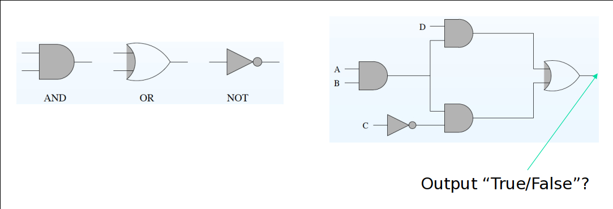

In logic or computer science, the Boolean Satisfiability Problem (abbreviated as SAT in this assignment) is to determine whether a given propositional logic formulae is true, and to further determine the model which makes the formulae true. The program or tool to answer the SAT problem is called an SAT solver. In this assignment, we'll learn how a SAT solver works and how to encode propositions and check its satisfiability by such SAT solvers. And as applications, we will also learn how to model practical problems by satisfiability, and thus solve them with the aid of SAT solvers.
There are many SAT/SMT solvers available, each with its pros and cons. The solver we'll be using in this assignment is the Z3 theorem solver/prover, developed by Microsoft Research. There is no special reason for us to choose Z3, any other SAT solvers will also be OK, but Z3's Python APIs will be very convenient.
This lab is divided into four parts, each of which contains both some tutorials and exercises. The first part is the SAT encoding of the basic propositions; the second part covers validity checking; part three covers the DPLL algorithm implementation; and the fourth part covers some SAT applications. Some problems are tagged with Exercise, which you should solve. And several problems are tagged with Challenge, which are optional. Download this code template to start with. For any problems, feel free to ask the TAs for help.
Before starting with this assignment, make sure you've finished Software Setup in the lab 1, and have Z3 and Python properly installed on your computer. For any installation problems, please feel free to contact us for help. As we'll be using Z3's Python-based API; you may find it useful to refer to the z3py tutorial and the documentation for Z3's Python API.
When you finished the lab, zip you code files (exclude .venv and other temporary folder) with file name <ID>-lab-3.zip (e.g., SA19225789-lab-3.zip), and submit it to USTC Online Teaching Platform. The deadline is 23:59 of December 1st, 2023 (Beijing time). Any late submission will NOT be accepted.
In the lab 2, we've learned how to declare propositions in z3py and prove their validity. But in most cases, Z3 is used as a solver. In this section, we'll learn how to solve propositions by using Z3py.
Example A-1: The simplest usage for Z3 is to feed the proposition to Z3 directly, to check the satisfiability, this can be done by calling the solve() function, the solve() function will create an instance of solver, check the satisfiability of the proposition, and output a model if that proposition is satisfiable, the code looks like:
F = Or(P, Q)
solve(F)
For the above call, Z3 will output something like this:
[P=True, Q=False]
which is a model with assignments to proposition P and Q that makes the proposition F satisfiable. Obviously, this is just one of several possible models.
Example A-2: Not all propositions are satisfiable, consider this proposition:
F = And(P, Not(P))
solve(F)
Z3 will output:
no solution
which indicates that the proposition F is not satisfiable, that is, the proposition F cannot be true for any possible values of P.
Consider again example A-1 in the previous:
F = Or(P, Q)
solve(F)
By default, Z3 only outputs the first row in the truth table:
P Q P\/Q
-----------------
t t t
t f t
f t t
f f f
After all, we're asking Z3 about the satisfiability of the proposition, so one row of evidence is enough. What if we want Z3 to output all the assignment of propositions that make the proposition satisfiable, not just the first one? For the above example, we want the all first 3 rows. Here is the trick: when we get an answer, we negate the answer, make a conjunction with the original proposition, then check the satisfiability again. For the above example:
F = Or(P, Q)
solve(F)
F = And(F, Not(And(P, Not(Q))))
solve(F)
F = And(F, Not(And(Not(P), Q)))
solve(F)
F = And(F, Not(And(P, Q)))
solve(F)
The output display all 3 possible solutions:
[P = True, Q = False]
[P = False, Q = True]
[P = True, Q = True]
no solution
In Exercise 1, we've learned how to use Z3 to obtain the solutions that make a given proposition satisfiable. In this part, we continue to discuss how to use Z3 to check the validity of propositions. Recall in exercise 2, we once used solver to prove the validity of propositions, so this is another strategy.
Example B-1: As we've discussed in previous lecture, the relationship between the validity and satisfiability of a proposition P is established by:
valid(P) <==> unsat(~P)
Let consider our previous example:
F = Or(P, Q)
solve(Not(F))
Z3 will output the following solution:
[P = False, Q = False]
the fact that ~F is satisfiable means that the proposition F is not valid. By this, it should be very clear how to use solvers like Z3 to prove the validity of a proposition.
Example B-2: Now we try to prove the double negation law (~~P -> P) is valid:
F = Implies(Not(Not(P)), P)
solve(Not(F))
In the lecture, we've discussed the DPLL algorithm. In this part of the assignment, you are required to implement the DPLL algorithm. Roughly speaking, to implement this algorithm, there are several technical steps: first, we should represent the proposition syntax by some abstract syntax; second, we should implement all the functions:
After finishing this algorithm to experiment how large propositions your algorithm can solve. For instance, you can generate some very large propositions using this generator and feed the generated propositions to your solver.
How to make you DPLL more efficient, one idea to make your solver concurrent. To be specific, for the splitting step, to the two cases, instead of using two sequential calls, we can create two threads/processes to do concurrent calls.
In the previous part we've discussed how to obtain solutions and prove the validity for propositions, and implemented the DPLL algorithm. In this part, we will try to use Z3 to solve some practical problems.
Usually when engineers design circuit layouts, they need do some verifications to make sure those layouts will not only output a permanent electrical signal since it's useless. We want to guarantee that the layouts can output different signals based on the inputs.
As the graph above shows, there are three kinds of logic gates used in design circuit layout, And, Or, Not. And there four inputs in the graph, A, B, C and D.
Hint: you should not only consider the constraints above, there are some implicit constraints, like:
Happy hacking!